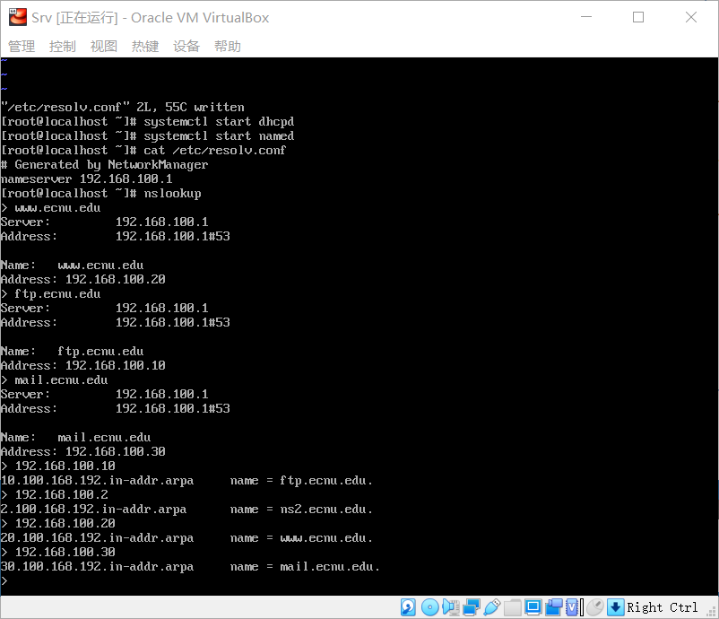
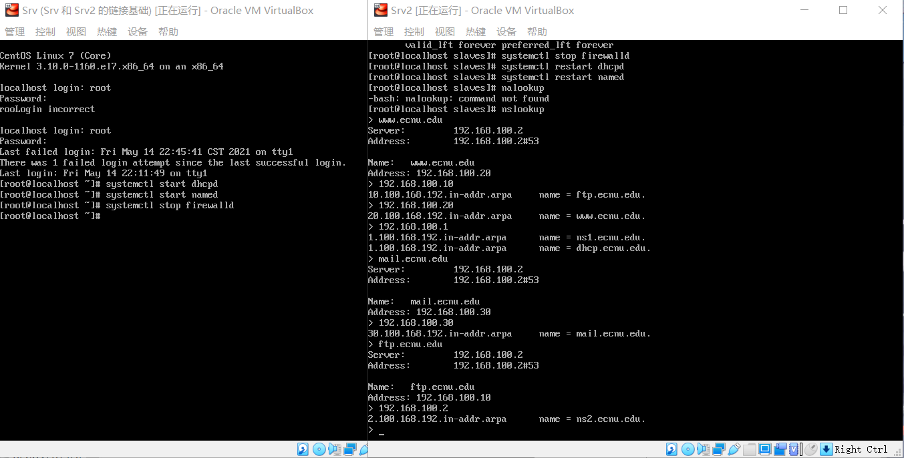

DNS的配置与管理
DNS的配置与管理
一、基础知识
- 全称：Domain Name System /域名系统
- 使域名和 IP 地址相互映射
- 域名解析：通过主机名，最终得到该主机名对应的IP地址的过程
概念：与网络上的数字型IP地址相对应的字符型地址
一般结构：主机名.三级域名.二级域名.顶级域名
– 顶级域名：cn、jp … edu、org …
– 二级域名：ibm、yahoo … com、edu、net、gov、top …
– 三级域名：A-Z, a-z, 0-9, 连接符 -
- 第0步：检查本地缓存
- 第1步：向本地DNS服务器请求
- 第2步：向根域名服务器请求
- 第3步：向顶级域名服务器请求
- 第4步：向权威域名服务器请求
- 一旦成功：返回结果，缓存留作备用，解析过程中止
- 递归查询：若自身不能，则以客户身份请求其他，客户机和服务器之间属于递归查询
循环查询：若自身不能，则指导客户请求其他，一般DNS服务器之间属于循环查询
正向解析：通过域名查 ip
- 反向解析：通过 ip 查域名
- 主域名服务器 master
- 辅助域名服务器 slave
- 缓存服务器 Caching-only
- SOA记录（Start Of Authority record）起始授权记录
- NS 记录(Name Server record)当前区域的DNS服务器
- A 和 AAAA 记录（Adress record）
- PTR 记录（PoinTer Record）全限定域名
- CNAME（Canonical Name record）别名记录
- MX 记录（Mail eXchange record）邮件交换器
二、项目实施
bind：DNS服务主程序，仅服务器端需要
bind-utils：辅助工具，用于测试 DNS，服务器和客户端都需要
1
2
3yum -y install bind bind-utils
注：本实验基于上次的DHCP，先把网络连接方式改成NAT，再将ifcfg-enp0s3文件恢复原样，
最后重启网卡：service network restart ，安装成功再改回DHCP的配置
修改主服务器主配置文件：/etc/named.conf
1
2
3
4
5
6
7
8
9options {
listen-on port 53 { any; }; // 在本机所有网卡的#53端口监听
……
directory "/var/named";
……
allow-query { any; }; // 允许所有客户端请求
……
};
……主服务器扩展配置文件：/etc/named.rfc1912.zones
1
2
3
4
5
6
7
8
9
10
11
12# 在前面添加如下代码
zone "ecnu.edu" IN { // 正向解析信息
type master; // 主服务器
file "ecnu.edu.zone"; // 区域文件名
allow-update {192.168.100.2;}; // 填写从服务器，若无，则填 none
};
zone "100.168.192.in-addr.arpa" IN { // 反向解析信息
type master; // 主服务器
file "192.168.100.arpa"; // 区域文件名
allow-update {192.168.100.2;}; // 从服务器
};
…正向解析文件：/var/named/ecnu.edu.zone
1
[root@Srv named]#cp -a named.localhost ecnu.ed
1
2
3
4
5
6
7
8
9
10
11
12
13
14$TTL 1D
@ IN SOA ns1.ecnu.edu. admin.ecnu.edu. ( // ns1:DNS服务器 // 联系 admin@ecnu.edu
0 ; serial
1D ; refresh
1H ; retry
1W ; expire
3H ); minimum
IN NS ns1.ecnu.edu. // DNS服务器
dhcp IN A 192.168.100.1 // 定义域名与IP地址的映射
ns1 IN A 192.168.100.1
ns2 IN A 192.168.100.2
ftp IN A 192.168.100.10
www IN A 192.168.100.20
mail IN A 192.168.100.30反向解析文件：/var/named/192.168.100.arpa
1
[root@Srv named]#cp -a named.loopback 192.168.100.arpa
1
2
3
4
5
6
7
8
9
10
11
12
13
14
15$TTL 1D
@ IN SOA ns1.ecnu.edu. admin.ecnu.edu. ( // ns1:DNS服务器 // 联系 admin@ecnu.edu
0 ; serial
1D ; refresh
1H ; retry
1W ; expire
3H ); minimum
IN NS ns1.ecnu.edu. // DNS服务器
ns1 IN A 192.168.100.1
1 IN PTR dhcp.ecnu.edu. // 定义IP地址与域名的映射
1 IN PTR ns1.ecnu.edu.
2 IN PTR ns2.ecnu.edu.
10 IN PTR ftp.ecnu.edu.
20 IN PTR www.ecnu.edu.
30 IN PTR mail.ecnu.edu.本机测试
启动服务器
1
[root@Srv ~]# systemctl start named
确保服务器指向本机
1
2[root@Srv ~]# cat /etc/resolv.conf
nameserver 192.168.100.1测试

复制虚拟机 Srv2
关闭 Srv 和 Srv2 的防火墙
1
systemctl stop firewalld
修改 /etc/resolv.conf 将客户端 DNS 改为192.168.100.2
修改 /etc/named.rfc1912.zones
1
2
3
4
5
6
7
8
9
10zone "ecnu.edu" IN {
type slave;
file "slaves/ecnu.edu.zone";
masters {192.168.100.1;};
};
zone "100.168.192.in-addr.arpa" IN {
type slave;
file "slaves/192.168.100.arpa";
masters {192.168.100.1;};
};重启服务器，/var/named/slaves 中已同步正/反向解析文件
测试

本博客所有文章除特别声明外，均采用 CC BY-NC-SA 4.0 许可协议。转载请注明来自 浮生孰来！